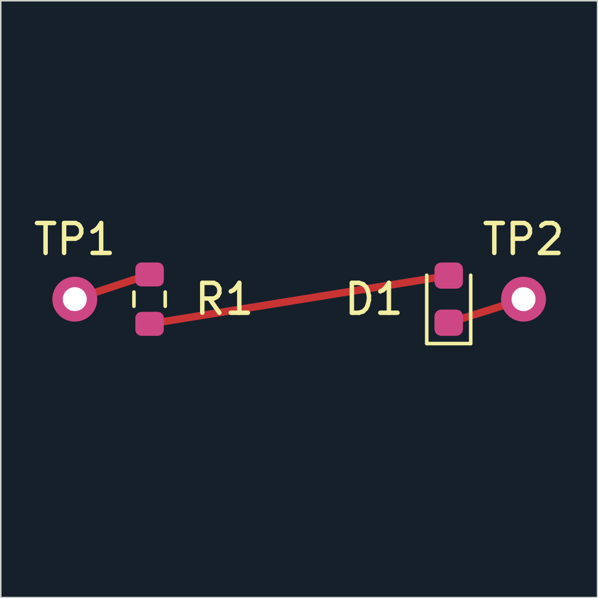
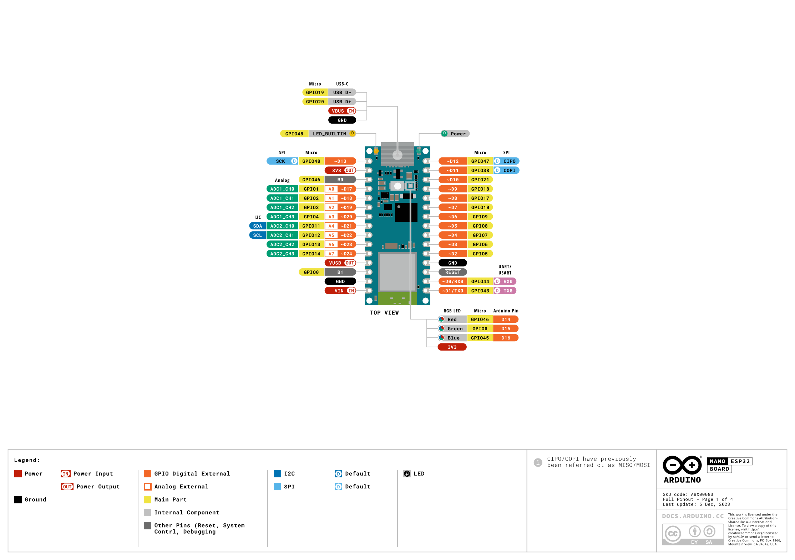
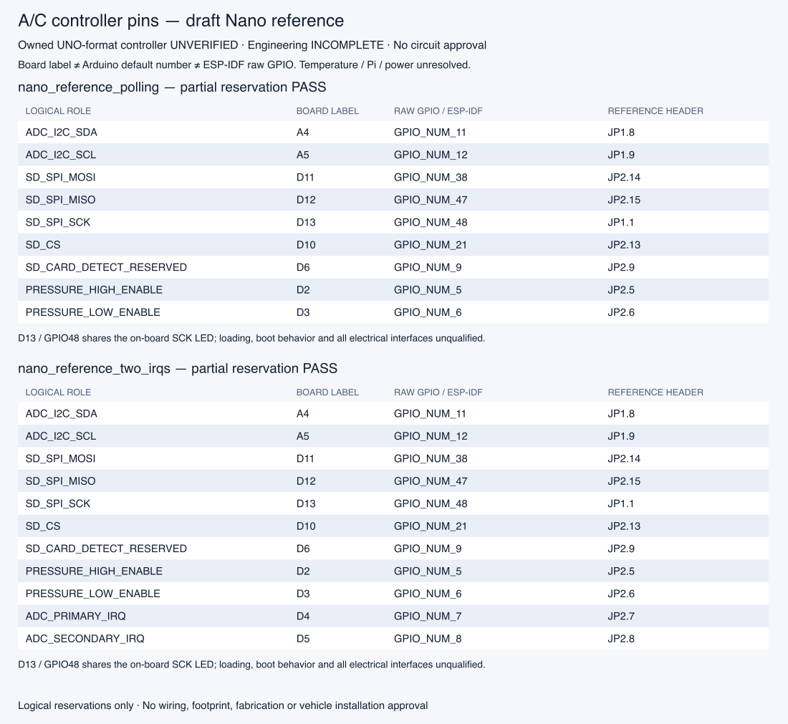

2026-10-13 · Engineering INCOMPLETE · Release BLOCKED
Pin report and exact inputs · Voltage-window report · Picture provenance
This 20 mm series LED example is the supported native creation path. Its retained Orion run reports zero ERC/DRC findings for the exact candidate. It is not the A/C board or an assembled-board photograph; electrical, physical and release qualification remain incomplete.

Original geometry from the retained native SVG; the dark viewing background changes display only.The focused A/C specification names this Nano baseline. The later owned UNO-format controller still needs identity, header and power-path verification; this reference does not identify that board.

© Arduino SA, CC BY-SA 4.0. Page 1 rasterized from the official pinout PDF; no content changes. Arduino does not endorse or verify this project.Two unselected partial Nano-reference proposals fit the checked pin budget. Printed D2 means GPIO5 in ESP-IDF. The checker detects duplicate GPIO, reserved boot/UART pins and bus routes outside the reviewed default-pin policy. Temperature, Pi link, boot/power behavior and the complete controller assignment remain unresolved.

Deterministic software report diagram. No nets, footprints, firmware pin configuration, actual wiring, physical tests or A/C PCB generated. All fourteen significant product contracts remain incomplete.